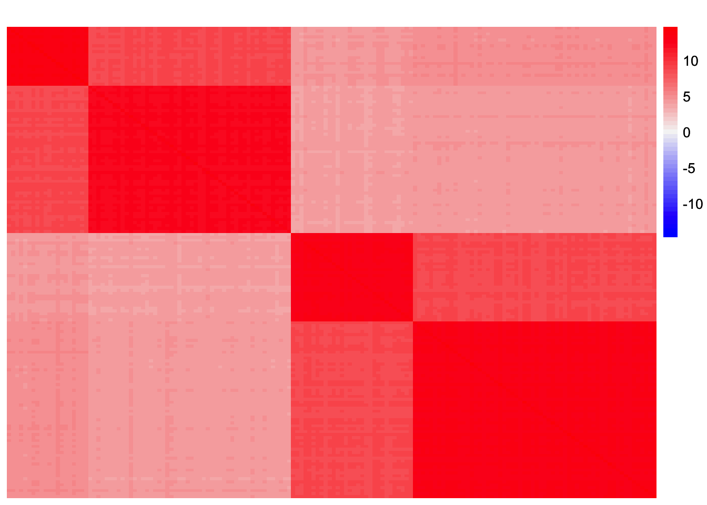
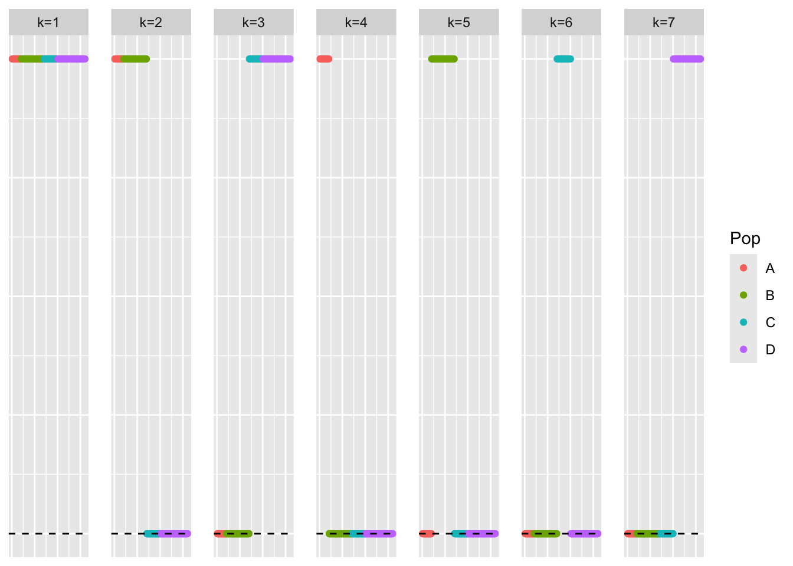
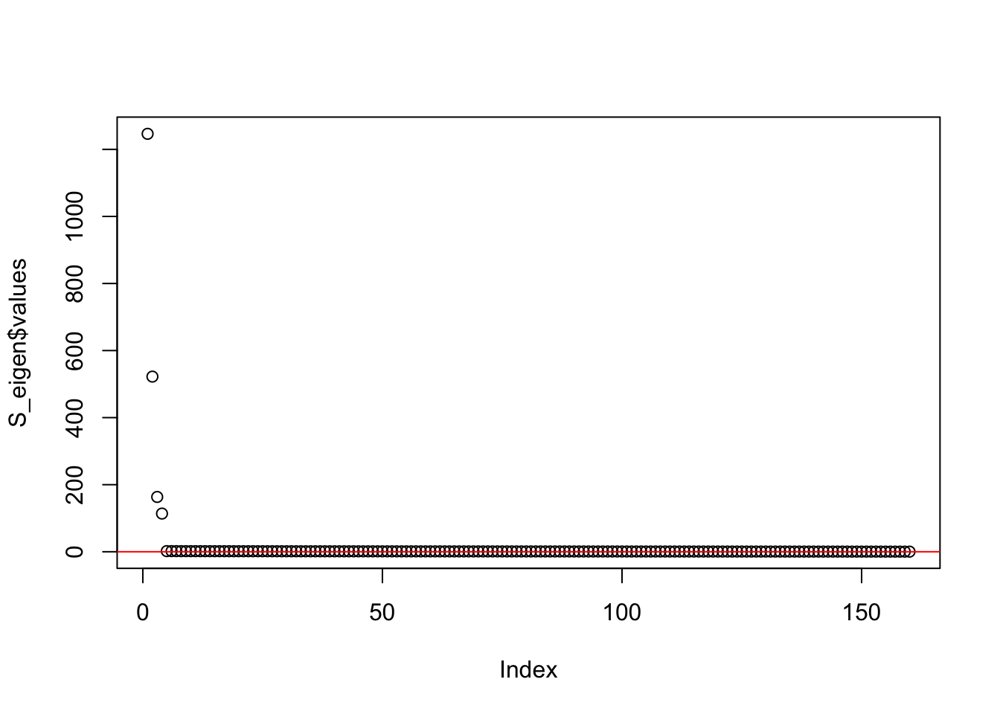
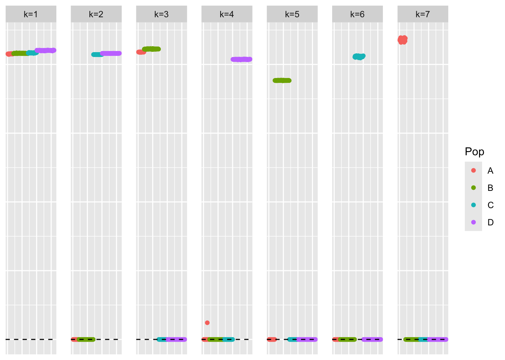
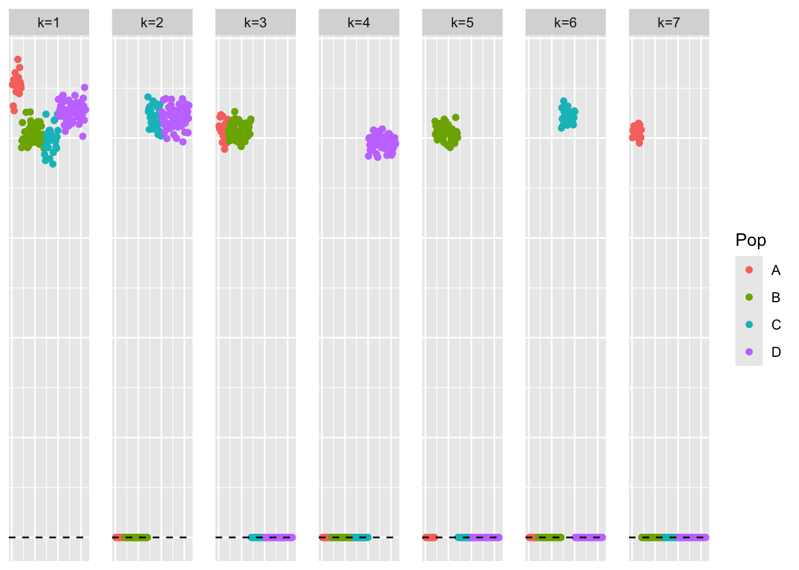
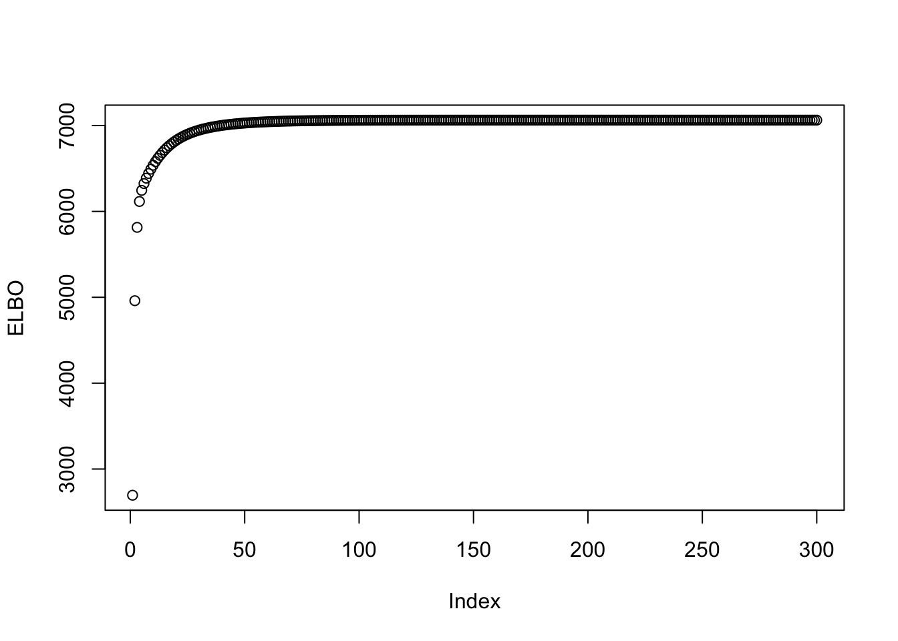
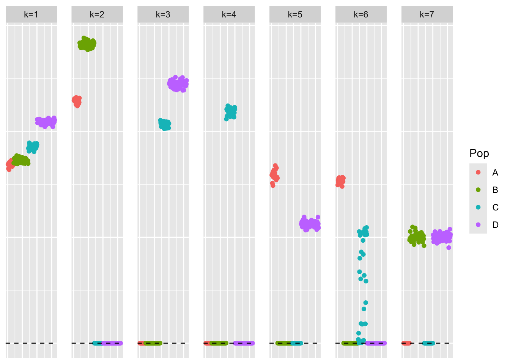
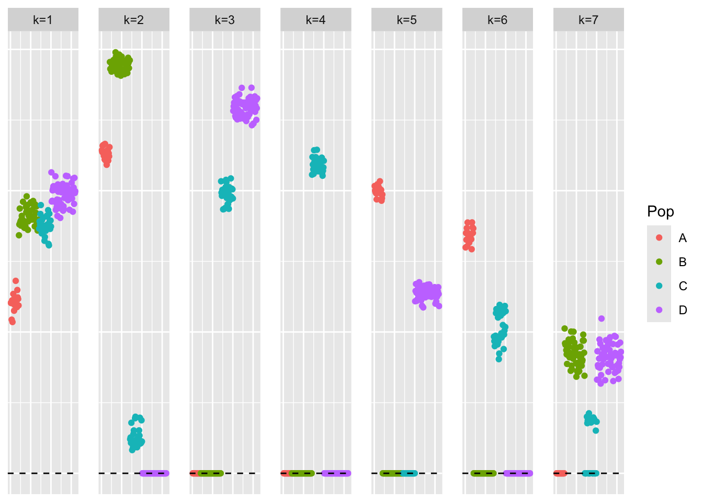
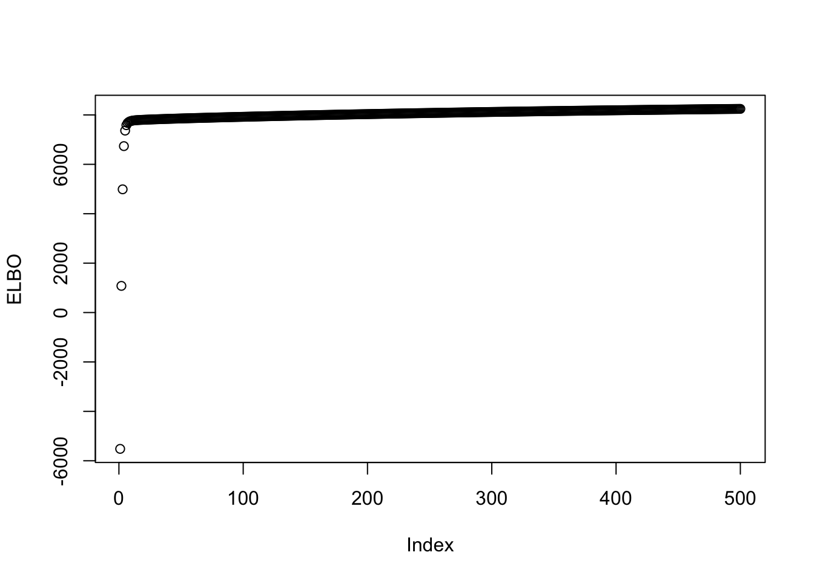
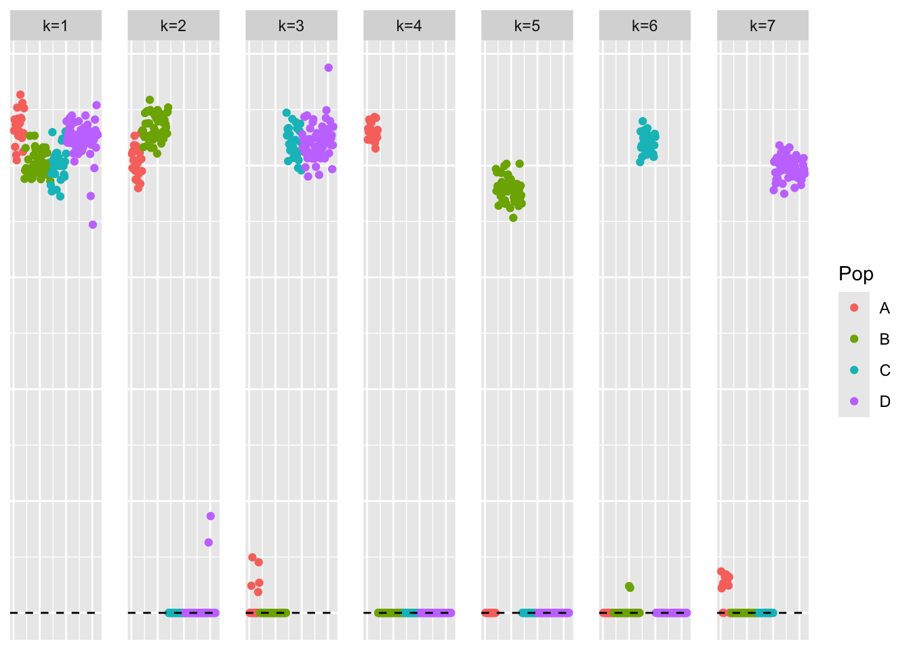

Last updated: 2026-02-06
Checks: 7 0
Knit directory:
symmetric_covariance_decomposition/
This reproducible R Markdown analysis was created with workflowr (version 1.7.2). The Checks tab describes the reproducibility checks that were applied when the results were created. The Past versions tab lists the development history.
Great! Since the R Markdown file has been committed to the Git repository, you know the exact version of the code that produced these results.
Great job! The global environment was empty. Objects defined in the global environment can affect the analysis in your R Markdown file in unknown ways. For reproduciblity it’s best to always run the code in an empty environment.
The command set.seed(20250408) was run prior to running
the code in the R Markdown file. Setting a seed ensures that any results
that rely on randomness, e.g. subsampling or permutations, are
reproducible.
Great job! Recording the operating system, R version, and package versions is critical for reproducibility.
Nice! There were no cached chunks for this analysis, so you can be confident that you successfully produced the results during this run.
Great job! Using relative paths to the files within your workflowr project makes it easier to run your code on other machines.
Great! You are using Git for version control. Tracking code development and connecting the code version to the results is critical for reproducibility.
The results in this page were generated with repository version a6ba3a7. See the Past versions tab to see a history of the changes made to the R Markdown and HTML files.
Note that you need to be careful to ensure that all relevant files for
the analysis have been committed to Git prior to generating the results
(you can use wflow_publish or
wflow_git_commit). workflowr only checks the R Markdown
file, but you know if there are other scripts or data files that it
depends on. Below is the status of the Git repository when the results
were generated:
Ignored files:
Ignored: .DS_Store
Ignored: .Rhistory
Ignored: analysis/.DS_Store
Ignored: data/.DS_Store
Untracked files:
Untracked: analysis/symebcovmf_overlap_backfit_exploration_part2.Rmd
Untracked: analysis/unbaltree_setting_exploration.Rmd
Untracked: analysis/unbaltree_setting_pt_exp_prior_exploration.Rmd
Unstaged changes:
Modified: analysis/pt_laplace_split_init_symebcovmf_exploration.Rmd
Note that any generated files, e.g. HTML, png, CSS, etc., are not included in this status report because it is ok for generated content to have uncommitted changes.
These are the previous versions of the repository in which changes were
made to the R Markdown
(analysis/baltree_unequal_popsizes_binary_prior.Rmd) and
HTML (docs/baltree_unequal_popsizes_binary_prior.html)
files. If you’ve configured a remote Git repository (see
?wflow_git_remote), click on the hyperlinks in the table
below to view the files as they were in that past version.
| File | Version | Author | Date | Message |
|---|---|---|---|---|
| Rmd | a6ba3a7 | Annie Xie | 2026-02-06 | Add exploration of binary priors in balanced tree with unequal group sizes setting |
In this analysis, I investigate symEBcovMF in the balanced tree setting with unequal population sizes. I’ve found that other methods do not perform as well in this setting, so I want to see how symEBcovMF does.
devtools::load_all('~/Documents/Github/ebnm')ℹ Loading ebnmWarning: package 'testthat' was built under R version 4.5.2library(pheatmap)
library(ggplot2)Warning: package 'ggplot2' was built under R version 4.5.2library(symebcovmf)source('code/visualization_functions.R')compute_L2_fit <- function(est, dat){
score <- sum((dat - est)^2) - sum((diag(dat) - diag(est))^2)
return(score)
}compute_crossprod_similarity <- function(est, truth){
K_est <- ncol(est)
K_truth <- ncol(truth)
n <- nrow(est)
#if estimates don't have same number of columns, try padding the estimate with zeros and make cosine similarity zero
if (K_est < K_truth){
est <- cbind(est, matrix(rep(0, n*(K_truth-K_est)), nrow = n))
}
if (K_est > K_truth){
truth <- cbind(truth, matrix(rep(0, n*(K_est - K_truth)), nrow = n))
}
#normalize est and truth
norms_est <- apply(est, 2, function(x){sqrt(sum(x^2))})
norms_est[norms_est == 0] <- Inf
norms_truth <- apply(truth, 2, function(x){sqrt(sum(x^2))})
norms_truth[norms_truth == 0] <- Inf
est_normalized <- t(t(est)/norms_est)
truth_normalized <- t(t(truth)/norms_truth)
#compute matrix of cosine similarities
cosine_sim_matrix <- abs(crossprod(est_normalized, truth_normalized))
assignment_problem <- lpSolve::lp.assign(t(cosine_sim_matrix), direction = "max")
return((1/K_truth)*assignment_problem$objval)
}sim_4pops <- function(args) {
set.seed(args$seed)
n <- sum(args$pop_sizes)
p <- args$n_genes
FF <- matrix(rnorm(7 * p, sd = rep(args$branch_sds, each = p)), ncol = 7)
# if (args$constrain_F) {
# FF_svd <- svd(FF)
# FF <- FF_svd$u
# FF <- t(t(FF) * branch_sds * sqrt(p))
# }
LL <- matrix(0, nrow = n, ncol = 7)
LL[, 1] <- 1
LL[, 2] <- rep(c(1, 1, 0, 0), times = args$pop_sizes)
LL[, 3] <- rep(c(0, 0, 1, 1), times = args$pop_sizes)
LL[, 4] <- rep(c(1, 0, 0, 0), times = args$pop_sizes)
LL[, 5] <- rep(c(0, 1, 0, 0), times = args$pop_sizes)
LL[, 6] <- rep(c(0, 0, 1, 0), times = args$pop_sizes)
LL[, 7] <- rep(c(0, 0, 0, 1), times = args$pop_sizes)
E <- matrix(rnorm(n * p, sd = args$indiv_sd), nrow = n)
Y <- LL %*% t(FF) + E
YYt <- (1/p)*tcrossprod(Y)
return(list(Y = Y, YYt = YYt, LL = LL, FF = FF, K = ncol(LL)))
}sim_args = list(pop_sizes = c(20,50,30,60), n_genes = 1000, branch_sds = rep(2,7), indiv_sd = 1, seed = 1)
sim_data <- sim_4pops(sim_args)This is a heatmap of the scaled Gram matrix:
plot_heatmap(sim_data$YYt, colors_range = c('blue','gray96','red'), brks = seq(-max(abs(sim_data$YYt)), max(abs(sim_data$YYt)), length.out = 50))
This is a scatter plot of the true loadings matrix:
pop_vec <- c(rep('A', 20), rep('B', 50), rep('C', 30), rep('D', 60))
plot_loadings(sim_data$LL, pop_vec)
This is a plot of the eigenvalues of the Gram matrix:
S_eigen <- eigen(sim_data$YYt)
plot(S_eigen$values) + abline(a = 0, b = 0, col = 'red')
integer(0)This is the minimum eigenvalue:
min(S_eigen$values)[1] 0.366726First, we start with running greedy symEBcovMF with the generalized-binary prior. I set the scale to make the prior more binary.
ebnm_generalized_binary_fix_scale <- function(x, s, mode = 'estimate', g_init = NULL, fix_g = FALSE, output = ebnm_output_default(), control = NULL){
ebnm_gb_output <- ebnm::ebnm_generalized_binary(x = x, s = s, mode = mode,
scale = 0.01,
g_init = g_init, fix_g = fix_g,
output = output, control = control)
return(ebnm_gb_output)
}symebcovmf_fit <- sym_ebcovmf_fit(S = sim_data$YYt, ebnm_fn = ebnm_generalized_binary_fix_scale, K = 7, maxiter = 500, rank_one_tol = 10^(-8), tol = 10^(-8), refit_lam = TRUE)This is a scatter plot of \(\hat{L}_{pt-exp}\), the estimate from symEBcovMF:
plot_loadings(symebcovmf_fit$L_pm %*% diag(sqrt(symebcovmf_fit$lambda)), pop_vec)
This is the objective function value attained:
symebcovmf_fit$elbo[1] -3003.307This is the crossproduct similarity value:
compute_crossprod_similarity(symebcovmf_fit$L_pm, sim_data$LL)[1] 0.9999901The greedy method is able to find something that looks like the tree.
Now, we run additional backfit. This is the code for the backfit:
symebcovmf_fit_backfit <- sym_ebcovmf_backfit(sim_data$YYt, symebcovmf_fit, ebnm_fn = ebnm_generalized_binary_fix_scale, backfit_maxiter = 500)This is a scatter plot of \(\hat{L}_{pt-exp-backfit}\), the estimate from symEBcovMF with backfit:
plot_loadings(symebcovmf_fit_backfit$L_pm %*% diag(sqrt(symebcovmf_fit_backfit$lambda)), pop_vec)
This is the objective function value attained:
symebcovmf_fit_backfit$elbo[1] 7063.018This is a plot of the progression of the ELBO:
plot(symebcovmf_fit_backfit$backfit_iter_elbo_vec, ylab = 'ELBO')
This is the crossproduct similarity value:
compute_crossprod_similarity(symebcovmf_fit_backfit$L_pm, sim_data$LL)[1] 0.9996861The final answer after the backfit still looks like a tree.
Now, we will try the generalized-binary prior with a different scale. I set the scale to make the prior less strictly binary.
symebcovmf_fit <- sym_ebcovmf_fit(S = sim_data$YYt, ebnm_fn = ebnm::ebnm_generalized_binary, K = 7, maxiter = 500, rank_one_tol = 10^(-8), tol = 10^(-8), refit_lam = TRUE)[1] "elbo decreased by 6.62982895537789"This is a scatter plot of \(\hat{L}_{pt-exp}\), the estimate from symEBcovMF:
plot_loadings(symebcovmf_fit$L_pm %*% diag(sqrt(symebcovmf_fit$lambda)), pop_vec)
This is the objective function value attained:
symebcovmf_fit$elbo[1] -13763.97This is the crossproduct similarity value:
compute_crossprod_similarity(symebcovmf_fit$L_pm, sim_data$LL)[1] 0.8988651With the less binary prior, the method is able to find some of the branches. However, for a couple of the branches, it finds groupings of two populations rather than a single population. Furthermore, some of the branch factors are not very binary.
Now, we run additional backfit. This is the code for the backfit:
symebcovmf_fit_backfit <- sym_ebcovmf_backfit(sim_data$YYt, symebcovmf_fit, ebnm_fn = ebnm::ebnm_generalized_binary, backfit_maxiter = 500)This is a scatter plot of \(\hat{L}_{pt-exp-backfit}\), the estimate from symEBcovMF with backfit:
plot_loadings(symebcovmf_fit_backfit$L_pm %*% diag(sqrt(symebcovmf_fit_backfit$lambda)), pop_vec)
This is the objective function value attained:
symebcovmf_fit_backfit$elbo[1] 8244.322This is a plot of the progression of the ELBO:
plot(symebcovmf_fit_backfit$backfit_iter_elbo_vec, ylab = 'ELBO')
This is the crossproduct similarity value:
compute_crossprod_similarity(symebcovmf_fit_backfit$L_pm, sim_data$LL)[1] 0.8836178With additional backfitting, the final answer does not look closer to a tree.
symebcovmf_true_value_init <- sym_ebcovmf_init(sim_data$YYt)
init_L_norms <- apply(sim_data$LL, 2, function(x){sqrt(sum(x^2))})
init_L_normalized <- t(t(sim_data$LL)/init_L_norms)
init_lambda <- (init_L_norms^2)*diag(crossprod(sim_data$FF)/ncol(sim_data$Y))
symebcovmf_true_value_init <- sym_ebcovmf_factors_init(sim_data$YYt, symebcovmf_true_value_init, init_L_normalized, init_lambda)symebcovmf_true_value_init <- refit_lambda(S = sim_data$YYt,
symebcovmf_true_value_init,
maxiter = 20)symebcovmf_true_value_init <- sym_ebcovmf_backfit(sim_data$YYt,
symebcovmf_true_value_init,
ebnm_fn = ebnm::ebnm_generalized_binary,
backfit_maxiter = 500)This is a scatter plot of \(\hat{L}_{pt-exp-backfit}\), the estimate from symEBcovMF with backfit:
plot_loadings(symebcovmf_true_value_init$L_pm %*% diag(sqrt(symebcovmf_true_value_init$lambda)), pop_vec)
symebcovmf_true_value_init$elbo[1] 8827.287This fit has a higher objective function than the fit with the more flexible generalized binary. This suggests that the method prefers the binary tree structure. Perhaps with a longer backfit, the fit initialized with the greedy fit would look closer to the binary tree representation.
sessionInfo()R version 4.5.1 (2025-06-13)
Platform: aarch64-apple-darwin20
Running under: macOS Sequoia 15.7.3
Matrix products: default
BLAS: /Library/Frameworks/R.framework/Versions/4.5-arm64/Resources/lib/libRblas.0.dylib
LAPACK: /Library/Frameworks/R.framework/Versions/4.5-arm64/Resources/lib/libRlapack.dylib; LAPACK version 3.12.1
locale:
[1] en_US.UTF-8/en_US.UTF-8/en_US.UTF-8/C/en_US.UTF-8/en_US.UTF-8
time zone: America/Chicago
tzcode source: internal
attached base packages:
[1] stats graphics grDevices utils datasets methods base
other attached packages:
[1] symebcovmf_0.0.0.9000 ggplot2_4.0.1 pheatmap_1.0.13
[4] ebnm_1.1-42 testthat_3.3.1 workflowr_1.7.2
loaded via a namespace (and not attached):
[1] gtable_0.3.6 xfun_0.54 bslib_0.9.0 devtools_2.4.6
[5] remotes_2.5.0 processx_3.8.6 lattice_0.22-7 callr_3.7.6
[9] vctrs_0.6.5 tools_4.5.1 ps_1.9.1 generics_0.1.4
[13] tibble_3.3.0 pkgconfig_2.0.3 Matrix_1.7-4 SQUAREM_2021.1
[17] RColorBrewer_1.1-3 S7_0.2.1 desc_1.4.3 lifecycle_1.0.4
[21] truncnorm_1.0-9 compiler_4.5.1 farver_2.1.2 stringr_1.6.0
[25] git2r_0.36.2 brio_1.1.5 getPass_0.2-4 httpuv_1.6.16
[29] htmltools_0.5.9 usethis_3.2.1 sass_0.4.10 yaml_2.3.12
[33] later_1.4.4 pillar_1.11.1 jquerylib_0.1.4 whisker_0.4.1
[37] ellipsis_0.3.2 cachem_1.1.0 sessioninfo_1.2.3 trust_0.1-8
[41] RSpectra_0.16-2 tidyselect_1.2.1 digest_0.6.39 stringi_1.8.7
[45] dplyr_1.1.4 purrr_1.2.0 ashr_2.2-67 labeling_0.4.3
[49] splines_4.5.1 rprojroot_2.1.1 fastmap_1.2.0 grid_4.5.1
[53] cli_3.6.5 invgamma_1.2 magrittr_2.0.4 pkgbuild_1.4.8
[57] withr_3.0.2 scales_1.4.0 promises_1.5.0 rmarkdown_2.30
[61] httr_1.4.7 otel_0.2.0 deconvolveR_1.2-1 lpSolve_5.6.23
[65] memoise_2.0.1 evaluate_1.0.5 knitr_1.50 irlba_2.3.5.1
[69] rlang_1.1.6 Rcpp_1.1.0 mixsqp_0.3-54 glue_1.8.0
[73] pkgload_1.4.1 rstudioapi_0.17.1 jsonlite_2.0.0 R6_2.6.1
[77] fs_1.6.6